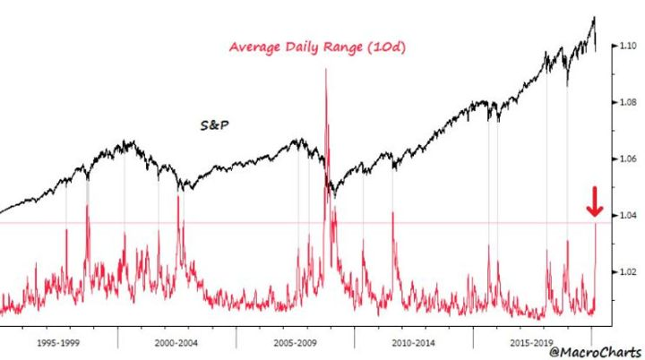

Viikon kuumat linkit
Linkkejä turbulenssin varrelta... hyvää viinkonloppua!
“The word 'risk' derives from the early Italian risicare, which means 'to dare'. In this sense, risk is a choice rather than a fate. The actions we dare to take, which depend on how free we are to make choices, are what the story of risk is all about. And that story helps define what it means to be a human being.” - Peter L. Bernstein
Vola on palanut markkinoille. Nämä ajat testaavat onko sijoittaja valmis kantamaan ottamansa riskin. Jotkut ovat toisia parempia sietämään kurssiheilunnan aiheuttaman epämieluisan tunteen kuin toiset. Seuraavassa tämän vuoristoradan aiheuttamia tuntemuksia, joita useimmat meistä käyvät läpi. Jos niitä pystyy kontrolloimaan edes jollakin tasolla, niin hyvä. Siinä auttaa, jos etukäteen olisi tiedostanut ne, ja olisi sijoitussuunnitelma, jossa vielä onnistuisi pitäytymään epävarmuuden keskellä.
Korona on ensimmäinen globaali kriisi, joka tapahtuu sosiaalisen median aikana. Se on aiheuttanut sen, että useat ihmiset, joilla ei todennäköisesti ole riittävää tietämystä aiheesta, kuitenkin jauhaa ja jakelee mielipiteitään siitä, kuten Liverpoolin valmentaja Jurgen Klopp nerokkaasti toteaa. Morgan Housel puolestaan kirjoittaa jälleen myöskin nerokkaasti siitä, miten ihmiset käsittelevät riskiä, etenkin liittyen koronaan.
Meille on tullut kyselyjä tuttavapiiriltä, että onko nyt se paikka ostaa. Vastaus on ollut, ja tulee todennäköisesti aina olemaan, että pitkäaikaiselle sijoittajalle nyt on ihan hyvä paikka ostaa lisää. On kuitenkin mahdotonta sanoa, onko tässä pohjat. Se tullaan tietämään ainoastaan aikanaan peräpeilistä. Sijoitussäästäjän on hyvä aina olla valmistautunut ostamaan lisää jos ja kun osakkeet laskevat merkittävästi (esim. per jokainen laskettu 10% laittaa ekstraa markkinoille kuukausiohjelman lisäksi). Howard Marks sijoittajakirjeessään puhuu samoin viestein. Häneltä myös ihan hyvä läpikäynti siihen, mitä koronan suhteen tiedetään ja mitä on tehty. Kysymys siihen, kuinka hyvä paikka nyt on ostaa, riippuu siitä millaiseksi koronan vaikutus muodostuu talouden fundamentteihin. Keskuspankeilla on ainakin rajallinen mahdollisuus auttaa asiassa. Loppuviimein kuitenkin, kukaan ei tiedä, miten asiat tulevat menemään.
Ja sitten muihin aiheisiin…
Myöskin Morgan Houselin kirjoitus historiasta ja siitä kuinka jälkiviisausharha kampittaa meidät ihmiset kuvittelemaan, että toteutunut historia olisi jotenkin vääjäämätön tiettyjen tapahtumien ketju. Siksi historia juuri on mielenkiintoista, että mikään ei ole vääjäämätöntä. Siksi siinä hetkessä, kun historiaa tapahtuu, harvoin ihmisillä on käsitystä siitä, mihin tapahtumat johtavat. Houselin essee käy läpi lehtiartikkeleita 1920-luvulta. Ne auttavat ymmärtämään, miten yhdysvaltalainen kuluttaja ja koko heidän taloutensa nousi 1910-luvun synkkyydestä 20-luvun ennennäkemättömään nousukauteen, joka harhautti heidät kollektiivisesti luulemaan, että se jatkuu ikuisesti. Seurauksena oli kuitenkin vuoden 1929 pörssiromahdus ja sitä seurannut suuri lama. On tärkeää ymmärtää miten tämä illuusio syntyi. Yhtä tärkeää on ymmärtää, että jälkikäteen kaikki tuntuu petollisen itsestäänselvyydeltä.
Etenkin VC-sijoittajat katsovat tuotteen tai palvelun yksikköekonometriaa arvioidessaan yleensä asiakkaan elinkaariarvoa (LTV) ja vertaavat sitä asiakkaan hankinnan kustannukseen (CAC). LTV:tä nostavat ARPU ja laskevat asiakassuhteen ajan kustannukset. Startupit ovat myöskin alkaneet optimoimaan tätä LTV:n yhtälötä. Se kuulostaa hyvältä ajatukselta sekä sijoittajien että yhtiöiden fokusoida tähän, sillä yhtälö on yksinkertainen ymmärtää. Mutta kuten harva asia elämässä, yrityksen bisneksen arvon luomisessakaan, onnistumistodennäköisyyttä ei voi supistaa yhdeksi yhtälöksi. Se on hyvä nähdä työkaluna myynnin ja markkinoinnin strategian ohella. Seuraavassa kymmenen syytä varoa palvomasta LTV-yhtälöä liikaa.
Psykedeelien potentiaalista niin mielenterveysongelmien kuin myös riippuvuuksien hoidosta olemme kirjoittaneet tällä foorumilla pariin otteeseen. Tutkimusaineisto niiden hyödyistä kontrolloiduissa hoidoissa on erittäin lupaavaa. Nyt ensimmäinen psykedeeliyhtiö on saatu pörssiin ja uusia on jonossa. Tätä aluetta on syytä seurata, sillä potentiaali on valtava. Aikaisemmin alkuvuodesta uutisoitiin kuinka VC-sijoittaja Peter Thielin tukema yhtiö lähestyi jo FDA:n tukea masennuksen hoitoon tarkoitetun taikasieniyhdisteen (psilosybiini) kehittämiseksi.
Podcastit:
Sijoittaminen on joskus tuskaista. Sen tuntee vatsanpohjassa. Tuskan kautta kulkee kuitenkin tie voittoon. Kuten Charlie Munger on sanonut, sijoittamisen kuuluukin olla vaikeaa, joka toisin väittää on typerys. Harva sijoittamisen muoto on kuitenkaan vaikeampaa ja kivuliaampaa kuin shorttaaminen, huomioiden, että osakemarkkinat ovat pitkässä juoksussa positiivisen tuotto-odotuksen systeemi. Shortaamisessa Jim Chanosilla on kenties pisin ja menestyksekkäin ura, joka juontaa juurensa 1980-luvun alkupuolelle. Chanos on myös historianörtti, joka on perehtynyt mm. taloushuijauksiin. Monivivahteinen haastattelu Chanosin kanssa.
Viikon kuva:
Viime viikkojen lasku on ollut varsin rivakka. Niinkin rivakka, että historiallisesti vastaliikettä ylöspäin on ollut lupa odottaa. Ja toki sitä on yritettykin viime päivinä. Monet tekniset mittarit osoittavat, että laskun momentum olisi ylimyyty. Esim. seuraavassa S&P500-indeksin toteutunut keskimääräinen kymmenen päivän volatiliteetti, joka on lähes 4%. Luku on sellaista tasoa, joka on historiallisesti kielinyt myyjien kapitulaatiosta. PAITSI muutamana kertana kuten finanssikriisin myllerryksessä tai teknokuplan puhkeamisen jälkeisen laskun pohjissa! Se näissä mittareissa on, että aina voidaan tehdä myös uudet ennätykset.
